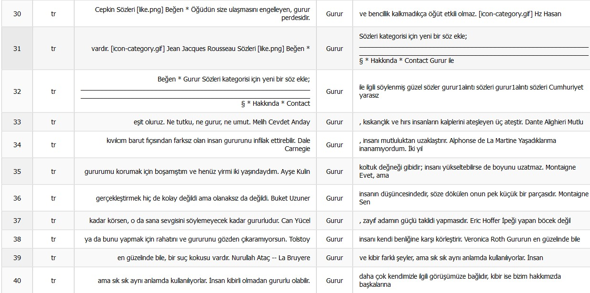
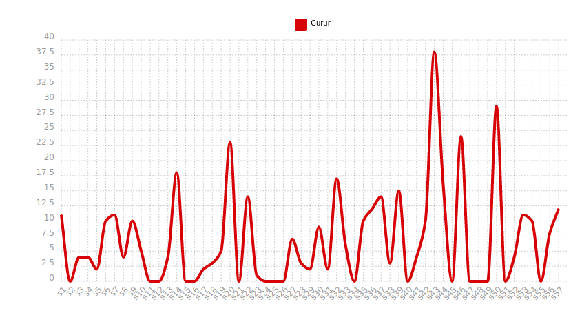
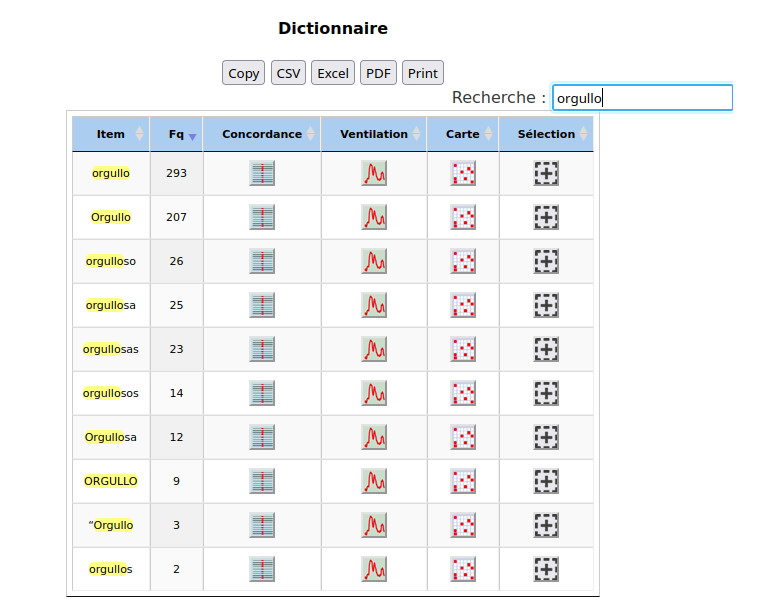
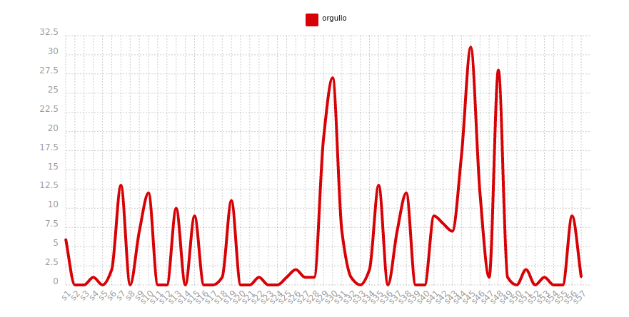
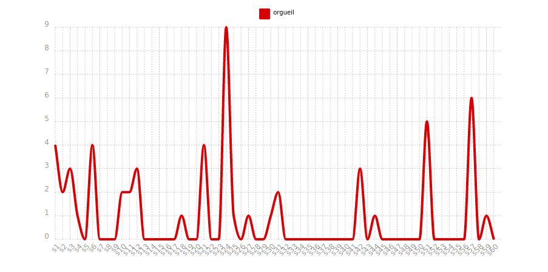
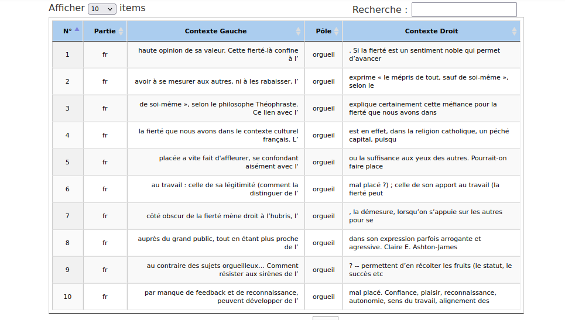
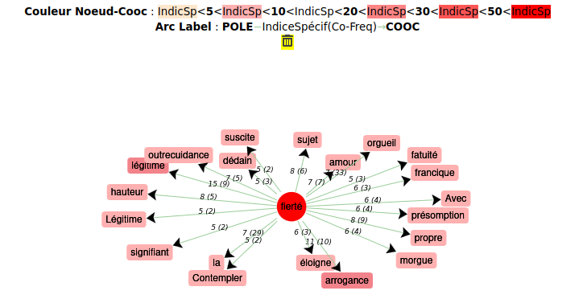
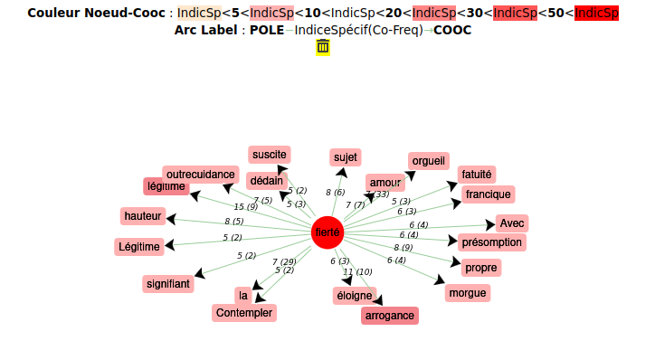

Analyse iTrameur pour le mot « Pride » en anglais :
Nous utilisons iTrameur pour analyser le contexte d’apparition du mot « Pride » ainsi que le nombre d’occurrences de celui-ci dans les différents contextes.
On vérifie d’abord que le fichier contexte est bien structuré pour pouvoir être utilisé. Pour vérifier cela on clique sur cadre dans iTrameur, ce que nous feront pour toutes les langues.

Passons au dictionnaire pour analyser les formes du mot «Pride» les plus présentes dans le corpus, on obtient :
Passons maintenant au contexte d’utilisation du mot «pride» et cela en utilisant l’outil concordancier de iTrameur.
On constate que le mot pride apparaît fréquemment avant le mot «month» soit « mois » en français, et cela fait directement référence au mois des fiertés. Il est probable que cette tendance découle de la reconnaissance accrue de cet événement spécifique dédié à la célébration, à la visibilité et à la lutte pour les droits de la communauté LGBTQ+."
Nous pouvons étudier la répartition du mot «pride» dans le corpus, en faisant l’analyse de la ventilation.
Nous constatons que la fréquence d’apparition du mot « pride » est plus élevée au niveau de la section S4 où le pic atteint un peu plus de 200 occurrences.
Nous analysons maintenant le mot «gurur» utilisé en turc. Nous recherchons le nombre d’occurrences dans le dictionnaire et nous pouvons constater que le mot «Gurur» avec une majuscule apparaît beaucoup plus fréquemment que le mot «gurur» sans majuscule avec 397 occurrences contre 257.
Passons maintenant à l’analyse du contexte d’utilisation du mot «Gurur» dans notre corpus en utilisant le concordancier de iTrameur.

Nous pouvons voir que le mot «Gurur» apparaît presque systématiquement après «ve Önyargı» qui signifie «et préjugés». Nous pousons supposer que cela fait directement référence à l’œuvre littéraire de Jane Austen « Orgueil et Préjugés ».
En faisant l’analyse de ventilation, nous pouvons étudier la répartition du mot «Gurur» dans le corpus.

Nous constatons qu’il apparaît dans plusieurs parties du corpus mais c’est dans la section 43 du corpus turc qu’il atteint la plus haute valeur qui est de 37,5 occurences. En faisant la même analyse pour «gurur» on voit que celui-ci atteint sa plus haute fréquence d’apparition dans les sections S6 et S50 du corpus.
En s’appuyant sur le Noeud-Cooc, on observe plus nettement les mots coocurents situés autour de « gurur » notre mot de référence. Les mots les plus fréquents se démarquent en rouge : Aşk « amour » qui reflète l’aspect très sentimental et personnel dans l’utilisation d’orgueil pour les corpus turcs.
Nous analysons maintenant le mot «orgullo». Nous recherchons le nombre d’occurrences dans le dictionnaire et nous pouvons constater que le mot « orgullo » en minuscule apparaît plus fréquemment que le mot «Orgullo» avec majuscule avec 293 occurrences contre 207.

En effectuant l’analyse de ventilation, on peut observer que le mot «orgullo» apparaît dans

l’ensemble du corpus, mais il atteint plus de 30 occurrences dans la section S45 contre près de 27 dans les sections S30 et S48.
Maintenant nous étudions le contexte d’utilisation du mot « orgullo » avec le concordancier.
Nous pouvons observer que le mot « prejuicio » à savoir « le préjugé » en français revient très souvent dans le même contexte que « orgullo ». Cette fréquence peut suggérer une association particulière avec une conotation négative, entre les concepts d'orgueil et de préjugé dans le corpus espagnol. Cette observation pourrait refléter les liens étroits entre les stéréotypes, les jugements hâtifs qui peuvent être associés à un sentiment d'orgueil.
En observant le Noeud-Cooc on peut identifier les termes les plus fréquemment associés à notre mot de référence "orgullo", tels que "prejuicio" (préjugé) et "emoción" (émotion), indiqués en rose foncé. On peut en déduire une proximité sémantique entre la fierté, les préjugés et les réponses émotionnelles qui en découlent. Si nous prêtons attention aux autres mots qui constituent le nuage, nous pouvons développer cet aspect émotionnel. L'orgueil, associé à des notions telles que positivo "positif", sentimiento "sentiment", raiz "origine" et guia "guide" peuvent être appliqués au patriotisme et à la fierté nationale, ce qui s ‘opposerais aux mots dejar "abandonner" et "negativo" négatif.
Passons maintenant à l’anayse iTrameur pour le mot «orgueil» en français. Grâce au dictionnaire on peut étudier la fréquence d’apparition du mot « orgueil » dans le corpus sous la forme « orgueil ». On constate qu’il apparaît 56 fois, suivi de très loin par l’adjectif « orgueilleuse » qui n’apparait que 3 fois.
La ventillation nous permet d’identifier dans quelles parties du corpus « orgueil » apparaît le plus. Ainsi, cela montre que c’est dans la section S24 que le nombre d’apparitions atteint son niveau le plus élevé avec 9 occurences.

Passons maintenant au contexte d’utilisation du mot « orgueil » en utilisant le concordancier.

Il apparait clairement en obervant les contextes, que deux aspects de l’orgeuil sont abordés. Un côté positif avec les mots « fierté », « noble », « succès » par exemple et un plus négatif avec les notions de « mépris », « méfiance », « suffisance ». Cela montre bien le contraste entre l’usage de l’orgueil pour qualifier quelque chose positivement ou au contrairaire comme une qualité plutôt désaventageuse.
Avec l’outil dictionnaire on effectue l’étude de fréquence d’apparition du mot «fierté» dans le corpus sous la forme «fierté». D’après les résultats on peut observer que le mot apparaît 79 fois, suivi de très loin du mot «Fierté » qui n’apparait que 6 fois.
Mais comme les deux mots peuvent signifier la même chose, on effectue la même analyse pour le mot orgueil et on observe qu’il apparaît 1139 fois dans le corpus fierté ce qui suggère l’utilisation fréquente de ces termes de manière interchangeable, renforçant l'idée que, dans ce contexte, "orgueil" et "fierté" sont souvent considérés comme équivalents ou étroitement liés.
Dans le concordancier du corpus «fierté », on voit que "orgueil" et "fierté" apparaissent dans la même ligne plus de 10 fois, ce qui suggère une forte corrélation sémantique entre ces deux termes. Cette récurrence pourrait indiquer une relation conceptuelle étroite, soulignant une nuance subtile ou une similarité profonde dans le contexte d'utilisation de ces mots.
En cherchant dans le corpus du mot « fierté », la ventillation montre que c’est le mot orgeuil qui apprait plus souvent dans le corpus « fierté » que le mot « fierté » lui-même. Dans la section S15 que le mot « orgueil » apparaît plus de 187 fois.
D’après le Noeud-Cooc, on peut déjà constater que "orgueil" et "fierté" se retrouvent fréquemment dans les deux corpus respectifs, de même que les mots relevés semblent liés à ce même sentiment de patriotisme relevé dans le corpus espagnol, avec des mots tels que « Légitime », « comtempler », « francique », « amour » et « légitime », « national », « Homme ». Ces termes évoquent non seulement un lien avec le patriotisme, mais suggèrent également une dimension de fierté masculine. Ainsi, l'orgueil apparaît comme une composante complexe, englobant à la fois l'individu et le collectif.
Tout en retrouvant cette divergence présente dans tous les corpus avec cette conotation négative avec des mots tels que : « fatuité », « présomption », « arrogance », « outrecuidance » et cette référence à la religion « péché ».
Considéré comme un péché sur la plan religieux, il reflète souvent un égocentrisme incompatible avec les valeurs de modestie et d'humilité.
En conclusion, notre analyse des occurrences du mot "orgueil" dans différents corpus linguistiques que sont le français, l’anglais, l’espagnol et le turc révèle différentes nuances culturelles. Le corpus anglais se caractérise par des références prédominantes au mouvement LGBT, tandis que le turc met en avant le célèbre roman anglais "Orgueil et préjugés" de Jane Austen. En espagnol, l'orgueil est fortement lié à la fierté nationale. Le corpus français se démarque en distinguant clairement "orgueil" et "fierté", offrant une palette plus riche de significations telles que la fierté nationale, la référence religieuse au péché capital, et l'orgueil masculin.
Dans tous les corpus, l'orgueil est appréhendé dans des perspectives à la fois positives et négatives, engendrant une variété d'émotions. Cette constatation met en évidence la nature complexe de l'orgueil, perçu tour à tour comme un attribut louable ou un défaut préjudiciable. Par ailleurs, la distinction sémantique entre "fierté" et "orgueil" se révèle particulièrement marquée en français, apportant des nuances supplémentaires.


Analyse iTrameur pour le mot «Gurur» en turc :


Analyse iTrameur pour le mot «orgullo» en espagnol :


Analyse iTrameur pour le mot «orgueil» en français :

Analyse iTrameur pour le mot «fierté» en français :


 
